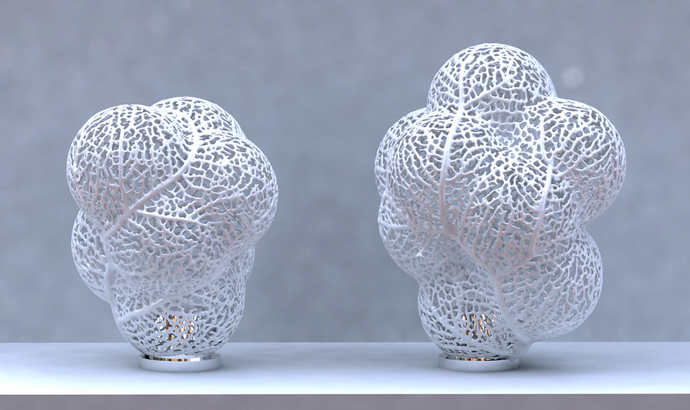
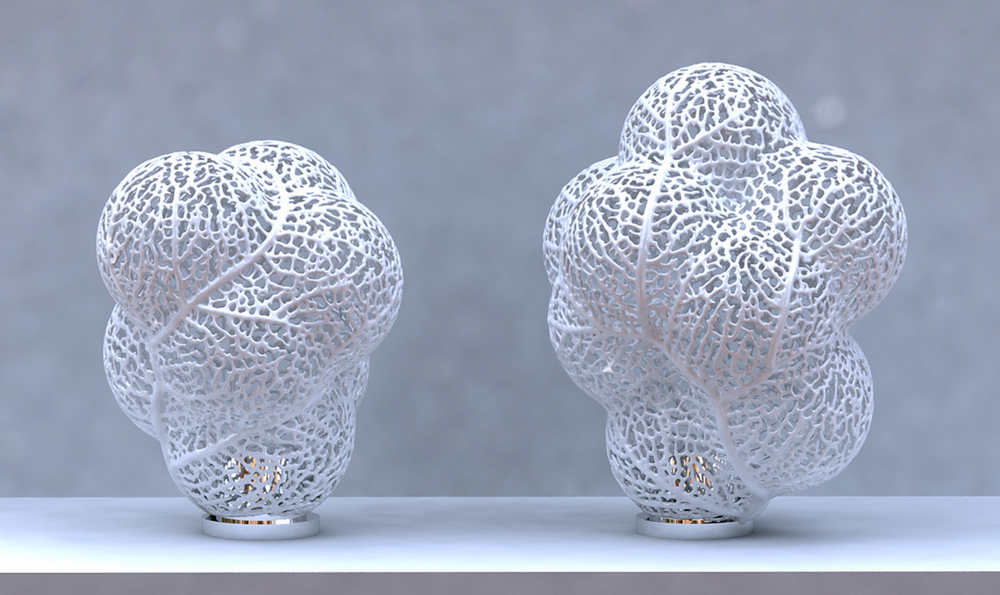
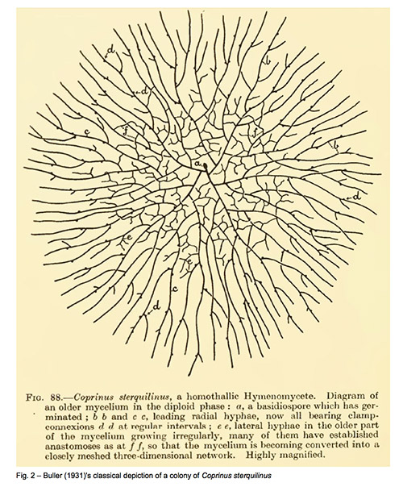

Hyphae in Art
The use of generative hyphae like structures leads to imagery which tends to be tangled and wispy while also being highly structured. As an effect or generative illustration technique it is well suited to particular situations, in a similar way that Delauney triangulation is. The process by which I've been learning how to program has involved matching art projects to computer science concepts. In this case the computer science project is the graph data structure and mycelium are a perfect, natural representation of that abstract structure.
 



Mycelial Growth
During my search for methods by which artists and scientists simulate mycelial growth I discovered Tunniel's work. He is an Austrian botanist and I found that his simulations exhibited more realistic behavior than any others. N-e-r-v-o-u-s system for instance uses a simulation of growing hyphae in their work but I believe it lacks the complexity of Tunniel's simulation.The following is based on an interview with him. I am very interested in the growth and resulting structure of mycelial networks as they follow rules of graph theory so closely and reflect structures which appear in many forms on different scales. I began by asking Tunniel about how mycelium grow in the real world.
A spore lands on a substrate that it likes. Water is the main requirement for growth. Germination is initiated. The hyphae begin by growing isotropically (in all directions), they then resolve to growing in one direction. This direction is usually in orientation with the root of the spore. As it grows it digests the surrounding substrate and if there is enough food the hyphae will branch. Most mycelium branch subapically - which is to say, behind the leading edge. However, in some cases hyphae will branch at the apex, in this case the rate of growth slows as the split happens. This happens if growth is perturbed in some way.
The first hyphae are called foraging hyphae and they will not branch with each other, rather they grow isotropically seeking out new sources of food. After a period of time secondary or vegetative hyphae begin to emerge. These branches grow more slowly and more erratically in between the original branches. These secondary hyphae have some awareness of the location of other searching branches and they will orient toward each other and always merge at the tips, hyphae never penetrate the sides of other branches. "This novel mode of cell-cell-communication was coined "ping-pong mechanism". As I understand it, In Tunniel's simulation he used the amount of digestive juice (blue) as a regulator to determine when vegetative hyphae would sprout.
This animation represents an analysis of betweenness centrality, a measure of a node's centrality in a network. This concept becomes important when discussing "scale free" networks (below).

As you can see from this drawing, the initial spore grows in one direction but quickly proceeds to expand outward in every direction. The caption on the drawing refers to the mycelium as being in the "diploid" phase. This refers to the fact that mycelium share cell nuclei between 'siblings' rather than mix chromosomes the way animals do. "The only time that fungal nuclei ever actually merge with their cell-mate is just before meiosis and spore production". Tunniel was not concerned with this aspect of fungal life for his simulation.
Tunniel's simulation uses a combination of raster (a matrix of pixels) and vector graphics. He has two data structures, one contains nodes, the other contains lines. As mycellium are very similar to a graph in computer science it is only natural to use the rules of graph theory in the simulation. The nodes and edges contain information about how much food is available - how much "blue" is around (digestive juice and autoregulator) and the connections to immediate neighbors amongst other things. The branches themselves orient themselves in the direction of the most food and a 'reaction diffusion' model can be used to describe the interaction between the red substrate, green food, and blue digestive enyzmes / autoregulative substances (in the simulation, these are identical).
Reaction-diffusion systems are mathematical models which explain how the concentration of one or more substances distributed in space changes under the influence of two processes: local chemical reactions in which the substances are transformed into each other, and diffusion which causes the substances to spread out over a surface in space. --Wikipedia
This simulation was not created by Tunniel and uses a completely different technique. Rather than mixing in vectors this simulation is based entirely on cellular automata and uses the Ready package. I'm including it here to further illustrate that complex structures can arise from simple rules.
Video Feedback
During our conversation a few points stood out to me.
- Growing mycelium pull water and nutrients through the network.
- Mushrooms appear more frequently in the fall because plants are no longer using their resources.
- Mushrooms don't 'grow' but are pumped full of water.
- Plants that receive fertilizer don't need mycorrhizae.
- In adverse conditions hyphae will form sclerotia.
- The hyphae will empty out, leaving empty shells behind, these can be filled up later.
And in particular, regarding my initial attraction to this topic he brought up the idea that mycelium is a scale free network that follows a power law.
"Scale-free networks occur in many areas of science and engineering, including the topology of web pages (where the nodes are individual web pages and the links are hyper-links), the collaborative network of Hollywood actors (where the nodes actors and the links are co-stars in the same movie), the power grid of the western United States (where the nodes are generators, transformers, and substations and the links are power transmission lines), and the peer-reviewed scientific literature (where the nodes are publications and the links are citations).
It has been suggested that the scale-free organizational structure of natural complex systems is responsible for a number of common emergent properties that are shared by different complex systems
Scale-free networks tend to promote high speed transfer of information or energy. Their hubs have a combination of high global connectivity with highly developed local clustering. Consequently, there is a rapid synchronization of distant nodes."
This idea is explored in more detail in this book:Patterns in Nature
It has been suggested that the scale-free organizational structure of natural complex systems is responsible for a number of common emergent properties that are shared by different complex systems
Scale-free networks tend to promote high speed transfer of information or energy. Their hubs have a combination of high global connectivity with highly developed local clustering. Consequently, there is a rapid synchronization of distant nodes."
Notes from the interview